farfima: Order Selection and Forecasting in Long-Memory Functional Time Series
Chang Liu, Han Lin Shang, Garth Tarr and Samuel Müller
farfima.Rmd1. Introduction
A functional time series is a sequence of curves observed over time, such as age-specific death rates in successive years. When the dependence between the curves decays slowly, the series has long memory. The functional autoregressive fractionally integrated moving-average (FARFIMA) model describes such series. The curves are fractionally differenced into short-memory curves , where is the backshift operator and is the memory parameter. The curves follow a functional autoregressive moving-average (FARMA) model of orders and , with autoregressive operators , moving-average operators and innovations .
The farfima package fits this model in three steps. It estimates , selects and , and estimates the operators. It then forecasts the curves with conformal prediction bands. The main functions are:
| Function | Purpose |
|---|---|
plot_curves() |
Rainbow plots of the curves |
split_curves() |
Training, validation and test samples |
farfima() |
Fit the model and calibrate the conformal prediction bands |
fitted(), residuals(),
plot()
|
The in-sample fit |
predict() |
Forecasts, and their evaluation on a test sample |
plot(), as.data.frame()
|
Plots and tables of the forecasts |
estimate_memory(), frac_diff(),
select_order(), estimate_operators()
|
The steps of farfima() on their own |
sim_farfima() |
Simulated curves |
Each section below introduces one function and then applies it to French female mortality rates.
2. Data
The data are French female death rates from the demography package,
for the years 1901 to 2006. Ages 0 to 94 are kept as single years, and
ages 95 and above are combined into one group, which avoids zero rates
at the oldest ages. The rates are smoothed by weighted penalised
regression splines, constrained to increase with age above 65, and taken
on the log10 scale. In farfima, curves are stored as a matrix with grid
points in rows and time in columns, here ages by years. fts
objects from the rainbow and ftsa packages also work.
library(farfima)
library(demography)
fr = extract.ages(extract.years(fr.mort, 1901:2006), 0:95)
x = log10(smooth.demogdata(fr, method = "mspline", b = 65, weight = TRUE)$rate$female)
dim(x)
#> [1] 96 1063. Rainbow plots: plot_curves()
plot_curves() draws the curves coloured by time, from
red for the earliest to violet for the latest. With
type = "rainbow", all curves are in one panel with a colour
bar. With type = "periods", each period has its own panel
and the other curves are in grey. periods is the number of
periods, or the first year of each period.
The death rates fall over time at almost all ages. The curves of the war years stand out at young adult ages.
plot_curves(x, xlab = "Age", ylab = "log10 death rate")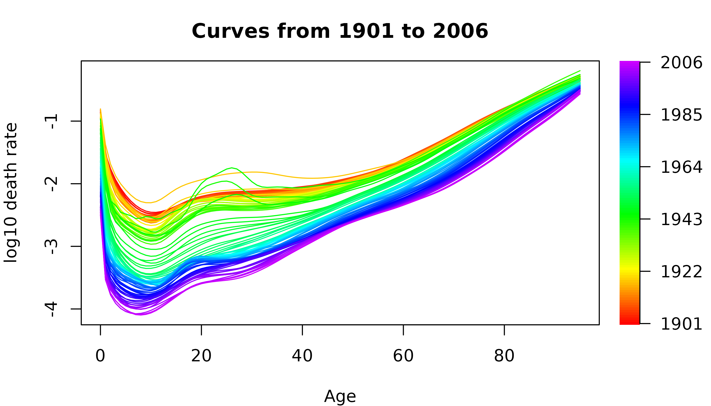
plot_curves(x, type = "periods", periods = c(1901, 1921, 1941, 1961, 1981), xlab = "Age",
ylab = "log10 death rate")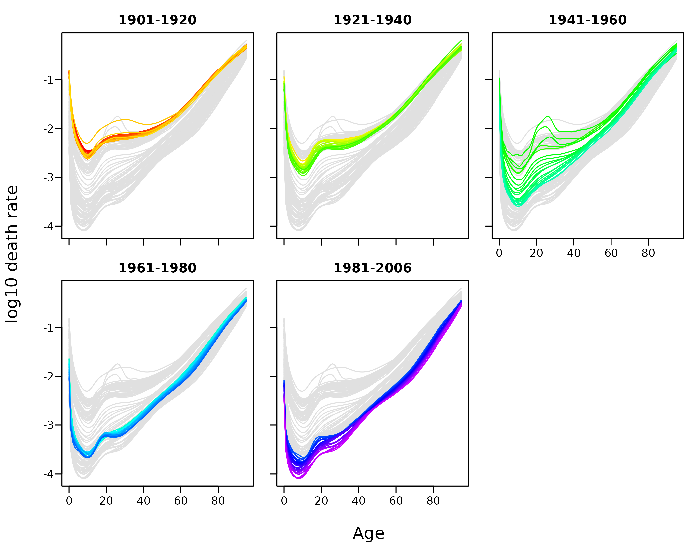
4. Training, validation and test samples:
split_curves()
split_curves() splits the curves in time order.
train and valid are the proportions of curves
in the training and validation samples, rounded down, and the remaining
curves form the test sample. The model is estimated on the training
sample, the conformal prediction bands are calibrated on the validation
sample, and the forecasts are evaluated on the test sample.
blocks = split_curves(x, train = 0.6, valid = 0.2)
sapply(blocks, ncol)
#> train valid test
#> 63 21 22The training sample covers 1901 to 1963, the validation sample 1964 to 1984 and the test sample 1985 to 2006.
5. Fitting the model: farfima()
farfima() fits the model to the training sample in three
steps. First, it estimates
with estimate_memory(). Second, it centres and fractionally
differences the training curves, drops the first trim
differenced curves, and selects
and
as in select_order(). Third, it estimates the operators by
the functional Hannan-Rissanen method, as in
estimate_operators(). With a validation sample, it also
forecasts up to h steps ahead from every validation origin,
and uses the forecast errors to calibrate the conformal prediction bands
for each horizon and level.
The main arguments are:
| Argument | Sets | Options |
|---|---|---|
d |
memory parameter |
"lw", "dfa", "lpwn1",
"lpwn2", "bc_lpwn1", "bc_lpwn2",
or a number |
order |
FARMA orders |
"ic_full", "ic_auto", "bj",
"cv", or c(p, q)
|
p, q
|
candidate orders | e.g. 0:5
|
method |
operator estimator |
"farma", or "far" for the FAR(1)
benchmark |
h |
longest horizon |
valid needs at least h + 1 curves |
level |
levels of the conformal prediction bands | e.g. c(0.8, 0.95)
|
band |
conformal prediction bands |
"SR", "NS", "AC",
"PID", "AcMCP"
|
symmetric |
symmetric AC and PID bands |
TRUE or FALSE
|
eta_grid |
candidate learning rates | e.g. c(0, 0.005, 0.01, 0.02, 0.05, 0.1)
|
scorecast |
scorecaster of the PID band |
"none", "naive", "theta"
|
window |
window at each origin |
"expanding" or "fixed"
|
trim |
differenced curves dropped | e.g. 20 |
memory_args, order_args
|
other settings of estimate_memory() and
select_order()
|
e.g. list(B = 50)
|
The fit below estimates by BC-LPWN2, selects the orders by the functional information criterion over , and calibrates the SR, NS and AC bands at the 80% and 95% levels for horizons up to 10 years.
fit = farfima(blocks$train, blocks$valid,
d = "bc_lpwn2", order = "ic_full", p = 0:5, q = 0:5,
h = 10, level = c(0.8, 0.95), band = c("SR", "NS", "AC"),
trim = 20, seed = 1)
#> Estimating d by BC-LPWN2 with 100 bootstrap samples
#> Selecting (p, q) by functional IC over 35 candidates
#> Calibrating the SR, NS, AC bands on 21 validation origins (12 at h = 10)
fit
#> FARFIMA(p = 0, d = 1.12, q = 1)
#> Data: 96 grid points x 63 training curves, 21 validation curves
#> Memory: BC-LPWN2 on the leading score process of the empirical covariance operator (Covar), bandwidth exponent 0.75
#> uncorrected d = 1.01, bootstrap bias = -0.11
#> note: the LPWN estimate is at the boundary of its search interval
#> note: 62% of the bootstrap estimates are at the boundary
#> Orders: functional IC (exhaustive search), 35 candidates
#> Operators: functional Hannan-Rissanen estimator with 1 principal component, first 20 fractionally differenced curves trimmed
#> Bands: SR, NS, AC at 80%, 95% for h = 1..10, calibrated on 21 validation curves (expanding window)The estimate of is 1.12. It is above 0.5, so the curves are non-stationary. The selected model for the differenced curves is FARMA(0, 1). The fit is a list:
fit$d
#> [1] 1.119545
fit$order
#> p q
#> 0 1
names(fit)
#> [1] "d" "order" "phi"
#> [4] "theta" "fitted" "fitted_differenced"
#> [7] "residuals" "memory" "order_selection"
#> [10] "operators" "calibration"
head(fit$order_selection$table)
#> p q F_T converged penalty IC
#> 1 0 1 0.005086746 TRUE 0.002629674 0.007716420
#> 2 0 2 0.028335153 TRUE 0.005259347 0.033594500
#> 3 0 3 0.002120173 TRUE 0.007889021 0.010009194
#> 4 0 4 0.002152126 TRUE 0.010518694 0.012670821
#> 5 0 5 0.003122546 TRUE 0.013148368 0.016270914
#> 6 1 0 0.005527590 TRUE 0.002629674 0.008157263
head(fit$calibration)
#> level h SR_zeta NS_quantile AC_eta n_origin
#> 1 0.8 1 1.26 0.1294168 0.1 21
#> 2 0.8 2 1.40 0.2006289 0.1 20
#> 3 0.8 3 1.48 0.2321279 0.1 19
#> 4 0.8 4 1.70 0.3484235 0.1 18
#> 5 0.8 5 1.76 0.3724905 0.1 17
#> 6 0.8 6 1.94 0.4687595 0.1 16Other settings
Only the AC band:
fit_ac = farfima(blocks$train, blocks$valid, band = "AC", trim = 20, seed = 1, verbose = FALSE)
fit_ac
#> FARFIMA(p = 0, d = 1.12, q = 1)
#> Data: 96 grid points x 63 training curves, 21 validation curves
#> Memory: BC-LPWN2 on the leading score process of the empirical covariance operator (Covar), bandwidth exponent 0.75
#> uncorrected d = 1.01, bootstrap bias = -0.11
#> note: the LPWN estimate is at the boundary of its search interval
#> note: 62% of the bootstrap estimates are at the boundary
#> Orders: functional IC (exhaustive search), 35 candidates
#> Operators: functional Hannan-Rissanen estimator with 1 principal component, first 20 fractionally differenced curves trimmed
#> Bands: AC at 80%, 95% for h = 1..10, calibrated on 21 validation curves (expanding window)Other estimators, known values and the FAR(1) benchmark:
fit_lw = farfima(blocks$train, blocks$valid, d = "lw", order = "bj", trim = 20, seed = 1, verbose = FALSE)
fit_lw$d
#> [1] 0.8948049
fit_lw$order
#> p q
#> 1 0
fit_known = farfima(blocks$train, blocks$valid, d = 1, order = c(1, 0), trim = 20, verbose = FALSE)
fit_known$order
#> p q
#> 1 0
bench = farfima(blocks$train, blocks$valid, d = 1, method = "far", trim = 20, verbose = FALSE)
bench
#> FARFIMA(p = 1, d = 1, q = 0)
#> Data: 96 grid points x 63 training curves, 21 validation curves
#> Memory: supplied
#> Orders: fixed at (1, 0) for the FAR(1) benchmark
#> Operators: score-based FAR(1) with 4 components (95% of the variation), first 20 fractionally differenced curves trimmed
#> Bands: SR, NS, AC at 80%, 95% for h = 1..10, calibrated on 21 validation curves (expanding window)Without a validation sample
Without valid there are no conformal prediction bands,
and order = "cv" cannot be used.
fit_point = farfima(blocks$train, d = "lw", trim = 20, verbose = FALSE)
fit_point
#> FARFIMA(p = 1, d = 0.8948, q = 0)
#> Data: 96 grid points x 63 training curves
#> Memory: LW on the leading score process of the empirical covariance operator (Covar), bandwidth exponent 0.75
#> Orders: functional IC (exhaustive search), 35 candidates
#> Operators: functional Hannan-Rissanen estimator with 1 principal component, first 20 fractionally differenced curves trimmed
#> Bands: none (no validation sample), point forecasts only
farfima(blocks$train, order = "cv", trim = 20, verbose = FALSE)
#> Error:
#> ! `valid` is required for cross-validation.6. In-sample fit: fitted(), residuals()
and plot()
Each fitted curve is the one-step-ahead forecast of a training curve
from the curves before it, and each residual curve is the training curve
minus its fitted curve. They cover the training curves left after
trimming, and the first max(p, q) of them have no fit.
fitted() gives the fitted curves on the scale of the data,
or on the fractionally differenced scale with
scale = "differenced". plot() draws the fitted
curves, or the residual curves with type = "residuals".
Here
,
so the first fitted curve, for 1921, is missing.
fitted(fit) + residuals(fit) returns the training
curves.
round(fitted(fit)[1:3, 1:4], 3)
#> 1921 1922 1923 1924
#> 0 NA -0.953 -1.106 -1.038
#> 1 NA -1.677 -1.822 -1.704
#> 2 NA -2.095 -2.124 -2.143
round(fitted(fit, scale = "differenced")[1:3, 1:4], 4)
#> 1921 1922 1923 1924
#> 0 NA -0.0118 -0.0083 -0.0162
#> 1 NA -0.0173 -0.0126 -0.0231
#> 2 NA -0.0170 -0.0138 -0.0210
round(residuals(fit)[1:3, 1:4], 4)
#> 1921 1922 1923 1924
#> 0 NA -0.1258 0.0849 -0.0430
#> 1 NA -0.1122 0.1381 -0.0586
#> 2 NA -0.0025 0.0110 -0.0042The fitted curves follow the training curves closely. The largest residuals are in the early 1940s, during the Second World War.
plot(fit, xlab = "Age", ylab = "log10 death rate")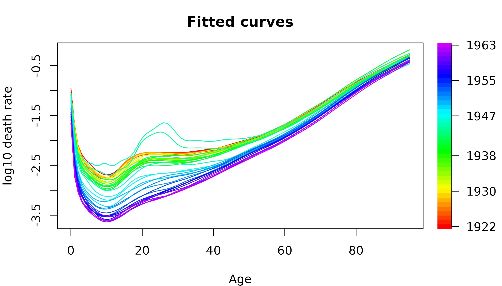
plot(fit, type = "residuals", xlab = "Age")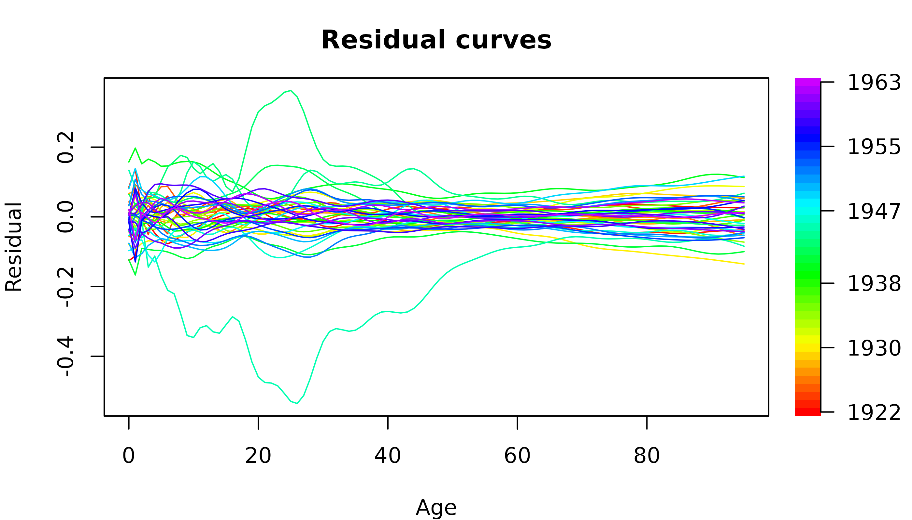
7. Forecasting: predict()
predict() makes point forecasts up to h
steps beyond the data, with the conformal prediction bands chosen in
farfima(). Without test, the forecasts start
after the last validation curve. With test, the forecasts
are also made from every test origin and compared with the observed
curves. The memory parameter and the orders stay fixed, and the
operators and the mean are re-estimated at each origin.
The evaluation has three tables. point gives the root
mean squared prediction error (RMSPE) and the mean absolute prediction
error (MAPE) of the point forecasts. interval gives the
empirical coverage probability (ECP) of each band, the absolute
difference between the ECP and the nominal level (CPD), and the mean
interval score (MIS). wis gives the weighted interval score
over the levels.
Without test, predict() forecasts the
h years after the end of the validation sample, 1984:
fc_future = predict(fit)
fc_future
#> Forecasts from FARFIMA(p = 0, d = 1.12, q = 1)
#> Horizons: h = 1..10 after curve 1984 (expanding window)
#> Bands: SR (scaled residual), NS (non-conformity score), AC (adaptive conformal)
#> Levels: 80%, 95%With test, it also forecasts from every test year and
compares the forecasts with the observed curves:
fc = predict(fit, test = blocks$test)
#> Evaluating on 22 test origins
fc
#> Forecasts from FARFIMA(p = 0, d = 1.12, q = 1)
#> Horizons: h = 1..10 after curve 2006 (expanding window)
#> Bands: SR (scaled residual), NS (non-conformity score), AC (adaptive conformal)
#> Levels: 80%, 95%
#>
#> Test evaluation over 22 test curves, averaged over horizons:
#> RMSPE = 0.0376, MAPE = 0.02849
#> band level ECP CPD MIS
#> SR 80% 0.8576 0.05755 0.1437
#> NS 80% 0.8568 0.05680 0.1436
#> AC 80% 0.8419 0.04186 0.1435
#> SR 95% 0.9676 0.01795 0.1993
#> NS 95% 0.9673 0.01768 0.1991
#> AC 95% 0.9646 0.01662 0.2005
#> WIS: SR = 0.01344, NS = 0.01343, AC = 0.01344
names(fc)
#> [1] "point_forecast" "bands" "evaluation"
names(fc$evaluation)
#> [1] "point" "interval" "wis"
round(fc$point_forecast[1:3, 1:4], 3)
#> 2007 2008 2009 2010
#> 0 -2.510 -2.529 -2.549 -2.569
#> 1 -3.556 -3.578 -3.601 -3.624
#> 2 -3.768 -3.788 -3.809 -3.831
round(fc$bands$AC[["95%"]]$upper[1:3, 1:4], 3)
#> 2007 2008 2009 2010
#> 0 -2.485 -2.487 -2.498 -2.506
#> 1 -3.483 -3.489 -3.509 -3.514
#> 2 -3.684 -3.697 -3.719 -3.717
fc$evaluation$point
#> h RMSPE MAPE
#> 1 1 0.02096444 0.01439112
#> 2 2 0.02405929 0.01693567
#> 3 3 0.02837087 0.02072548
#> 4 4 0.03037777 0.02294323
#> 5 5 0.03691488 0.02763683
#> 6 6 0.03901947 0.03010596
#> 7 7 0.04401368 0.03353032
#> 8 8 0.04760678 0.03667402
#> 9 9 0.05115215 0.03991071
#> 10 10 0.05356249 0.04204064
head(fc$evaluation$interval)
#> band level h ECP CPD MIS
#> 1 SR 0.8 1 0.8773674 0.07736742 0.06837232
#> 2 SR 0.8 2 0.8397817 0.03978175 0.08046992
#> 3 SR 0.8 3 0.8515625 0.05156250 0.09662283
#> 4 SR 0.8 4 0.8591009 0.05910088 0.11042785
#> 5 SR 0.8 5 0.8564815 0.05648148 0.13542431
#> 6 SR 0.8 6 0.8664216 0.06642157 0.14894384
head(fc$evaluation$wis)
#> band h WIS
#> 1 SR 1 0.006610023
#> 2 SR 2 0.007767017
#> 3 SR 3 0.009380851
#> 4 SR 4 0.010460928
#> 5 SR 5 0.012844694
#> 6 SR 6 0.014046495h can be shorter than in the fit, and band
can be a subset of the bands of the fit:
fc_ac5 = predict(fit, test = blocks$test, h = 5, band = "AC", verbose = FALSE)
fc_ac5$evaluation$interval
#> band level h ECP CPD MIS
#> 1 AC 0.80 1 0.8271780 0.027178030 0.06814715
#> 2 AC 0.80 2 0.8040675 0.004067460 0.08108688
#> 3 AC 0.80 3 0.8156250 0.015625000 0.09564643
#> 4 AC 0.80 4 0.8366228 0.036622807 0.10839912
#> 5 AC 0.80 5 0.8414352 0.041435185 0.13367773
#> 6 AC 0.95 1 0.9517045 0.001704545 0.10092475
#> 7 AC 0.95 2 0.9399802 0.010019841 0.11759479
#> 8 AC 0.95 3 0.9572917 0.007291667 0.13598516
#> 9 AC 0.95 4 0.9687500 0.018750000 0.14431337
#> 10 AC 0.95 5 0.9606481 0.010648148 0.19035769A fit without a validation sample gives point forecasts only, and its test sample follows the training sample:
fc_point = predict(fit_point, test = cbind(blocks$valid, blocks$test), h = 5)
#> Evaluating on 43 test origins
#> No validation sample in the fit: point forecasts only.
fc_point
#> Forecasts from FARFIMA(p = 1, d = 0.8948, q = 0)
#> Horizons: h = 1..5 after curve 2006 (expanding window)
#> Bands: none (the fit has no validation sample)
#>
#> Test evaluation over 43 test curves, averaged over horizons:
#> RMSPE = 0.03031, MAPE = 0.02245A test sample that does not follow on in time gives a warning:
fc_wrong = predict(fit_point, test = blocks$test, h = 5, verbose = FALSE)
#> Warning: `test` starts at 1985 rather than 1964. The samples must follow each
#> other in time.AC, PID and AcMCP conformal prediction bands
These bands are updated over the test sample from the error rates of
earlier bands. With symmetric = FALSE, the lower and upper
edges of the AC and PID bands are calibrated separately.
scorecast = "naive" or "theta" adds a
scorecaster to the PID band. The AcMCP band is always asymmetric. The
learning rates are chosen on the validation sample:
fit_seq = farfima(blocks$train, blocks$valid, d = fit$d, order = fit$order,
h = 10, band = c("NS", "AC", "PID", "AcMCP"), symmetric = FALSE,
trim = 20, verbose = FALSE)
fit_seq$calibration[fit_seq$calibration$h %in% c(1, 10), ]
#> level h SR_zeta NS_quantile AC_eta PID_eta AcMCP_eta n_origin
#> 1 0.80 1 1.26 0.1294168 0.0 0.0 0.00 21
#> 10 0.80 10 2.54 0.7723282 0.0 0.0 0.00 12
#> 11 0.95 1 1.96 0.4816188 0.1 0.1 0.05 21
#> 20 0.95 10 3.78 1.3850231 0.1 0.1 0.05 12
fc_seq = predict(fit_seq, test = blocks$test, verbose = FALSE)
fc_seq
#> Forecasts from FARFIMA(p = 0, d = 1.12, q = 1)
#> Horizons: h = 1..10 after curve 2006 (expanding window)
#> Bands: NS (non-conformity score), AC (adaptive conformal), PID (conformal PID control), AcMCP (autocorrelated multistep conformal)
#> Levels: 80%, 95%
#>
#> Test evaluation over 22 test curves, averaged over horizons:
#> RMSPE = 0.0376, MAPE = 0.02849
#> band level ECP CPD MIS
#> NS 80% 0.8568 0.05680 0.1436
#> AC 80% 0.8604 0.06036 0.1401
#> PID 80% 0.8419 0.04377 0.1405
#> AcMCP 80% 0.6798 0.12121 0.1642
#> NS 95% 0.9673 0.01768 0.1991
#> AC 95% 0.9573 0.01070 0.1954
#> PID 95% 0.9560 0.01102 0.1929
#> AcMCP 95% 0.8580 0.09353 0.2787
#> WIS: NS = 0.01343, AC = 0.01326, PID = 0.01325, AcMCP = 0.01505
plot(fc_seq, type = "horizons", h = c(1, 5, 10), xlab = "Age", ylab = "log10 death rate")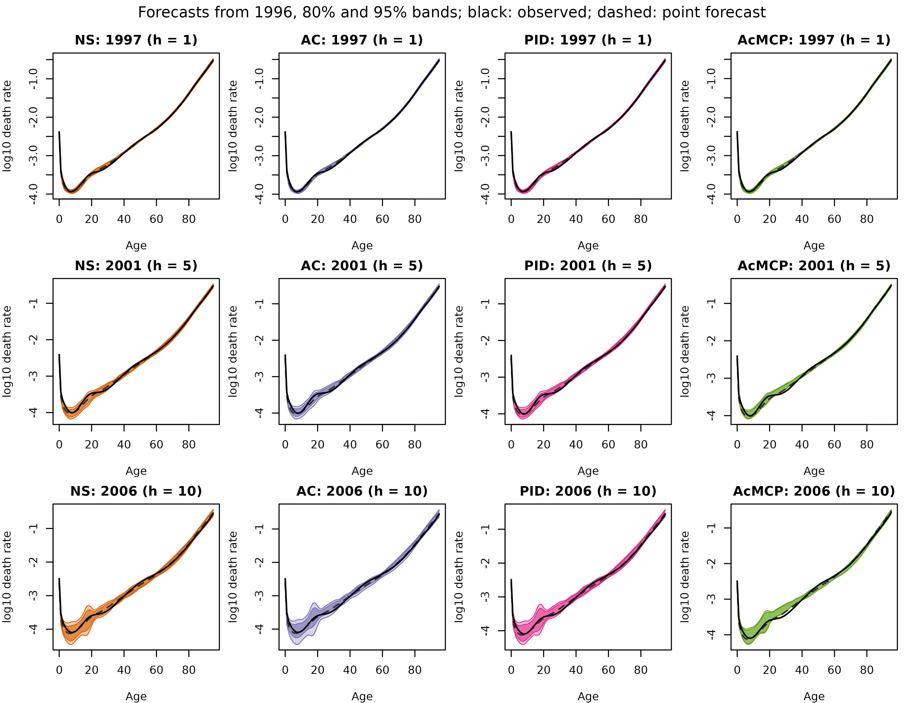
8. Plotting forecasts: plot()
plot() draws a forecast in four ways.
type = "curve" draws the forecast h steps
beyond the data with its conformal prediction band. With
target_test_curve = k, it draws the forecast of the k-th
test curve made h steps earlier, with the observed curve.
type = "horizons" shows one column per band and one row per
horizon. type = "series" shows a few grid points over time,
and type = "recent" the last curves with the forecasts.
The first plot is the one-year-ahead forecast for 2007 with its AC band. The second is the forecast of the 11th test year, 1995, made three years earlier, with the observed curve.
plot(fc, h = 1, band = "AC", xlab = "Age", ylab = "log10 death rate")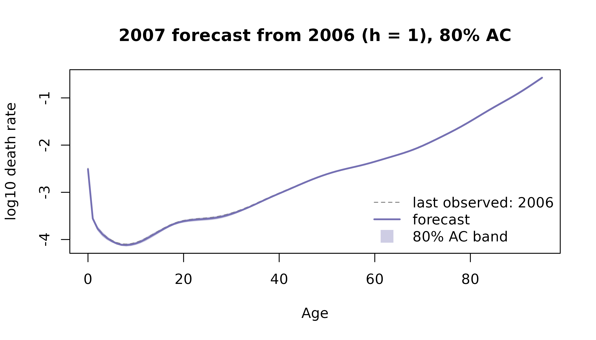
plot(fc, h = 3, target_test_curve = 11, band = "AC", level = 0.95, xlab = "Age", ylab = "log10 death rate")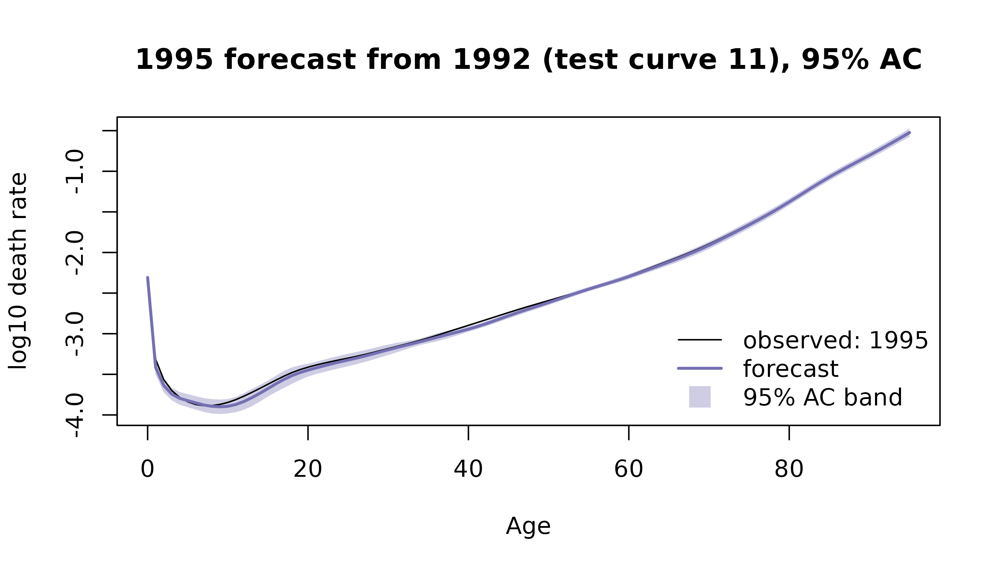
plot(fc, type = "horizons", xlab = "Age", ylab = "log10 death rate")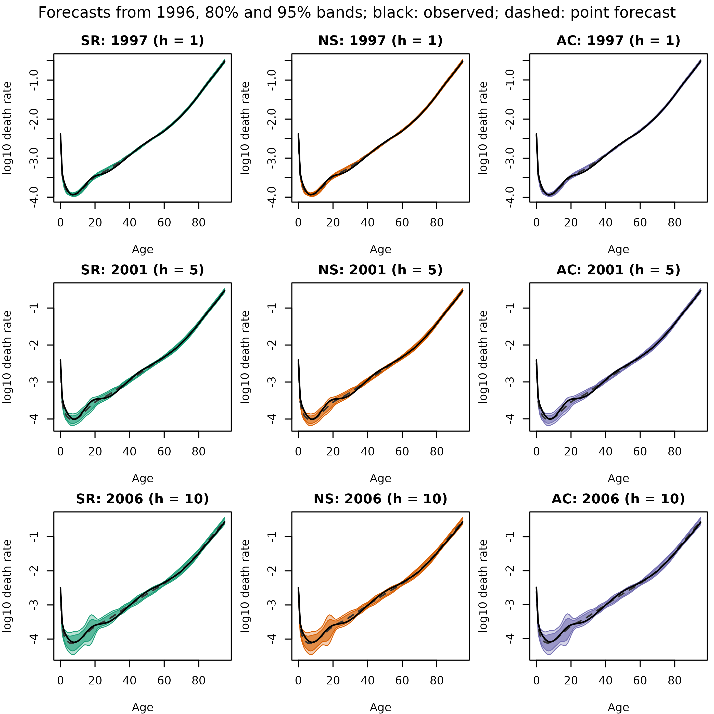
plot(fc, type = "series", at = c(0, 20, 50, 80), band = "AC", main = "Age", xlab = "Year", ylab = "log10 death rate")
plot(fc, type = "recent", xlab = "Age", ylab = "log10 death rate")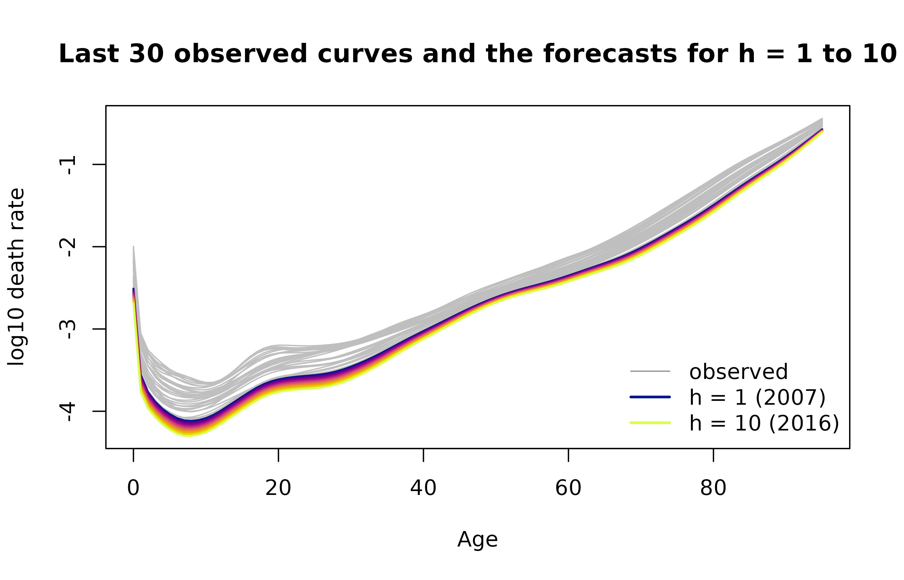
9. Tables: as.data.frame()
as.data.frame() puts the forecasts in a table with one
row per grid point, horizon, band and level. By default it gives the
forecasts beyond the data. With test = TRUE, it gives the
forecasts of the test curves, with their origins and the observed
values.
head(as.data.frame(fc), 3)
#> band level h target grid point_forecast lower upper
#> 1 SR 0.8 1 2007 0 -2.510069 -2.526350 -2.493787
#> 2 SR 0.8 1 2007 1 -3.555884 -3.603365 -3.508403
#> 3 SR 0.8 1 2007 2 -3.767514 -3.822432 -3.712596
df_test = as.data.frame(fc, test = TRUE)
head(df_test, 3)
#> origin band level h target grid point_forecast lower upper
#> 1 1984 SR 0.8 1 1985 0 -2.152287 -2.168568 -2.136005
#> 2 1984 SR 0.8 1 1985 1 -3.227789 -3.275270 -3.180308
#> 3 1984 SR 0.8 1 1985 2 -3.432966 -3.487884 -3.378048
#> target_test_curve observed
#> 1 1 -2.140453
#> 2 1 -3.153511
#> 3 1 -3.393605The table makes summaries easy. For example, the coverage of the 95%
AC band at h = 1:
10. The steps on their own
The three steps of farfima() can also be run on their
own. The memory parameter is estimated on the original curves, and the
orders and operators on short-memory curves.
Memory parameter: estimate_memory()
estimate_memory() estimates
from the leading score process, the centred curves projected onto the
leading eigenfunction of a covariance-type operator. The estimators are
local Whittle ("lw"), detrended fluctuation analysis
("dfa"), local polynomial Whittle with noise
("lpwn1", "lpwn2"), and their bias-corrected
versions by the prefiltered sieve bootstrap ("bc_lpwn1",
"bc_lpwn2"). m_const sets the bandwidth, and
B the number of bootstrap samples.
With the same seed, BC-LPWN2 gives the estimate used by
fit:
m = estimate_memory(blocks$train, method = "bc_lpwn2", seed = 1)
m
#> Memory estimate d = 1.12
#> BC-LPWN2 on the leading score process of the empirical covariance operator (Covar), bandwidth exponent 0.75
#> uncorrected d = 1.01, bootstrap bias = -0.11, bootstrap sd = 0.329
#> note: the LPWN estimate is at the boundary of its search interval
#> note: 62% of the bootstrap estimates are at the boundary
sapply(c("dfa", "lw", "lpwn1", "lpwn2"), function(meth) estimate_memory(blocks$train, method = meth)$d)
#> dfa lw lpwn1 lpwn2
#> 0.9740937 0.8948049 1.0100000 1.0100000Fractional differencing: frac_diff()
frac_diff() applies
at every grid point. farfima() centres the training curves,
fractionally differences them with d and drops the first
trim. The same steps by hand give the short-memory curves
y:
A negative d undoes the differencing:
FARMA orders: select_order()
select_order() selects
and
for short-memory curves. "ic_full" minimises the adaptive
functional Hannan-Quinn information criterion over all candidates, and
"ic_auto" uses the same criterion with a stepwise search.
"bj", the functional Box-Jenkins method, tries the
candidates by increasing
and stops at the first whose residuals pass the functional portmanteau
test. "cv" minimises the forecast error on a validation
sample. plot() shows the criterion of each candidate, with
the selected model boxed.
o_ic = select_order(y, method = "ic_full")
o_ic
#> Selected (p, q) = (0, 1)
#> functional IC (exhaustive search), 35 candidates
select_order(y, method = "bj", seed = 1)
#> Selected (p, q) = (1, 0)
#> functional Box-Jenkins, 20 lags, 35 candidates"ic_auto" warns when its largest model is unstable. A
smaller range avoids this:
o_auto = select_order(y, method = "ic_auto")
#> Warning: The largest candidate FARMA(5, 5) is unstable; use smaller ranges of p
#> and q.
select_order(y, method = "ic_auto", p = 0:3, q = 0:3)
#> Selected (p, q) = (0, 1)
#> auto functional IC, 15 candidatesWith order = "cv", farfima() selects the
orders by forecasting the validation curves on their original scale:
fit_cv = farfima(blocks$train, blocks$valid, d = m$d, order = "cv", h = 5, trim = 20, verbose = FALSE)
fit_cv$order
#> p q
#> 1 0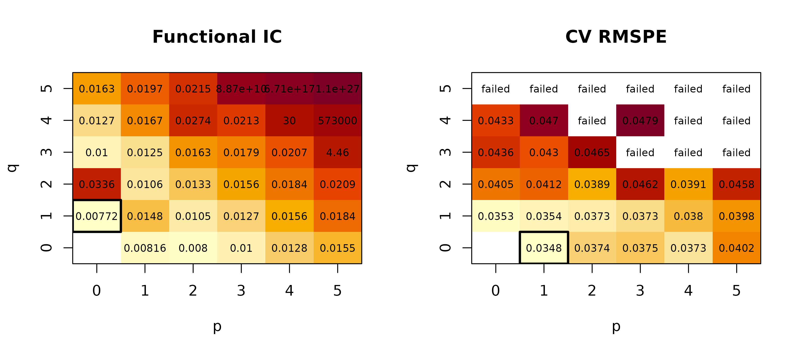
par(oldpar)Operators: estimate_operators()
estimate_operators() estimates the operators of a
FARMA(p, q) model by the functional Hannan-Rissanen method. Each
operator is stored as a grid by grid matrix, so applying it to a curve
is a matrix product. plot() draws the operators as
heatmaps, red for positive and blue for negative values.
With the selected orders, it gives the operators of
fit:
op = estimate_operators(y, order = o_ic)
op
#> FARMA(0, 1) operators
#> Data: 96 grid points x 43 curves
#> Operators: functional Hannan-Rissanen estimator with 1 principal component
#> Norms: MA lag 1 = 0.427
all.equal(op[c("phi", "theta")], fit[c("phi", "theta")])
#> [1] TRUE
plot(op, xlab = "Age v", ylab = "Age u")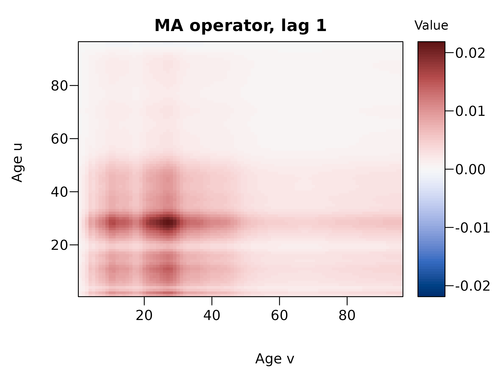
11. Simulated data: sim_farfima()
sim_farfima() simulates n curves from a
FARFIMA(p, d, q) model on no_grid equally spaced points of
[0, 1], with Brownian motion innovations. ar_strength and
ma_strength set the operator norms. Simulated curves are
useful to check the methods when the true model is known:
sim = sim_farfima(n = 500, d = 0.3, p = 1, q = 0, ar_strength = 0.5, seed = 1)
sb = split_curves(sim)
fit_sim = farfima(sb$train, sb$valid, d = "lpwn2", h = 5, trim = 50, verbose = FALSE)
fit_sim$d
#> [1] 0.5449465
fit_sim$order
#> p q
#> 1 012. Unstable fits
Large orders can give unstable operators. farfima() then
warns, and forecast origins whose fit fails are skipped with a
warning.
fit_33 = farfima(blocks$train, blocks$valid, d = fit$d, order = c(3, 3), h = 5, trim = 20, verbose = FALSE)
#> Warning: 17 of 21 validation forecasts failed and were skipped (origins 1965,
#> 1966, 1969, 1970, 1971, 1972 and 11 more).
fit_33
#> FARFIMA(p = 3, d = 1.12, q = 3)
#> Data: 96 grid points x 63 training curves, 21 validation curves
#> Memory: supplied
#> Orders: supplied
#> Operators: functional Hannan-Rissanen estimator with 1 principal component, first 20 fractionally differenced curves trimmed
#> Bands: SR, NS, AC at 80%, 95% for h = 1..5, calibrated on 21 validation curves (expanding window)
#> 17 of 21 validation forecasts failed and were skipped
fc_33 = predict(fit_33, test = blocks$test, verbose = FALSE)
#> Warning: The forecast beyond the data comes from an unstable FARMA fit.
#> Warning: 22 of 22 test forecasts failed and were skipped (origins 1984, 1985,
#> 1986, 1987, 1988, 1989 and 16 more).13. Summary
The farfima package fits FARFIMA models to functional time series in
three steps, estimating the memory parameter, selecting the FARMA orders
and estimating the operators, and forecasts the curves with conformal
prediction bands. farfima() and predict()
cover the usual workflow, and each step can also be run on its own. The
help pages give the details of each function and its references.